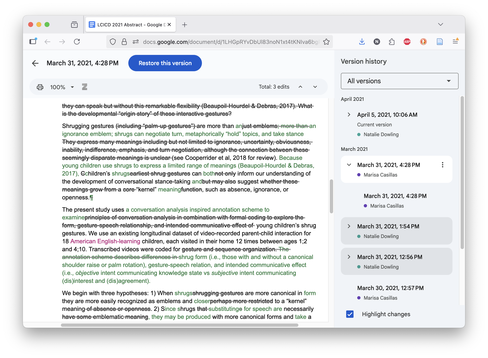
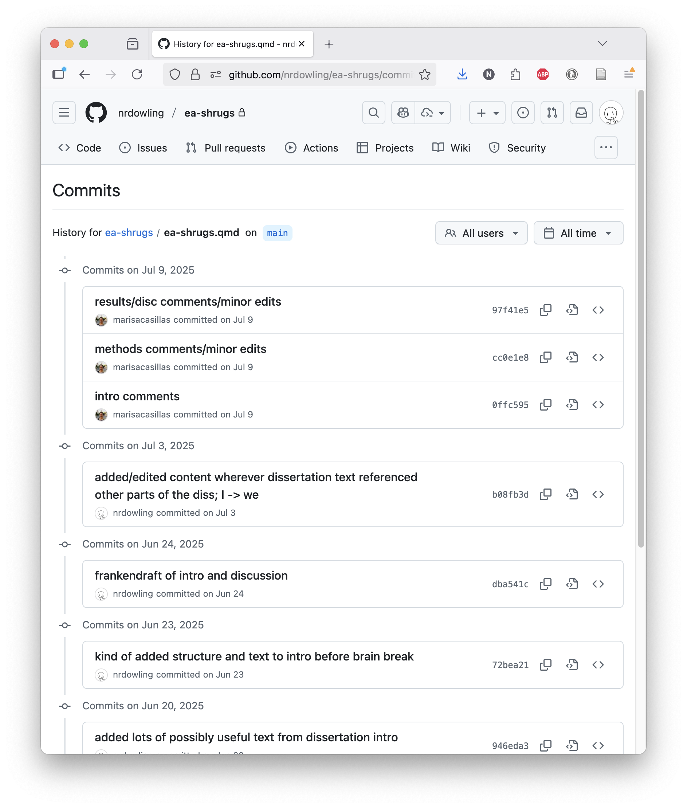
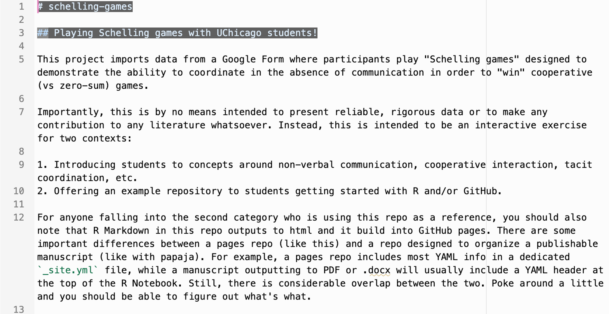
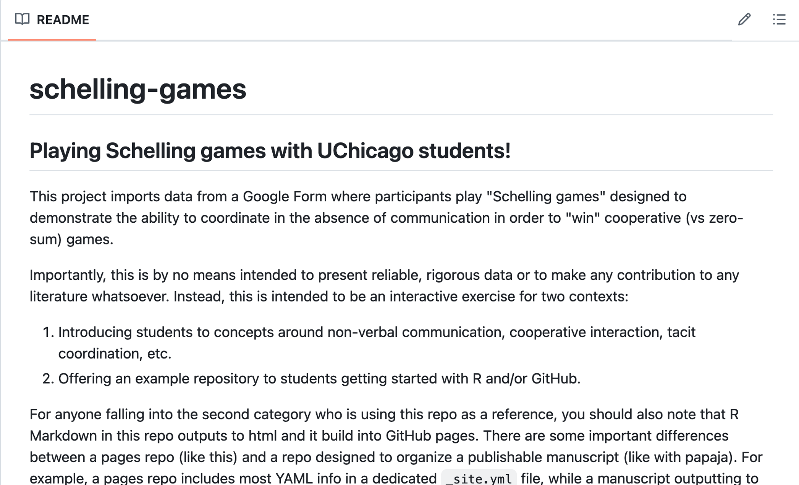
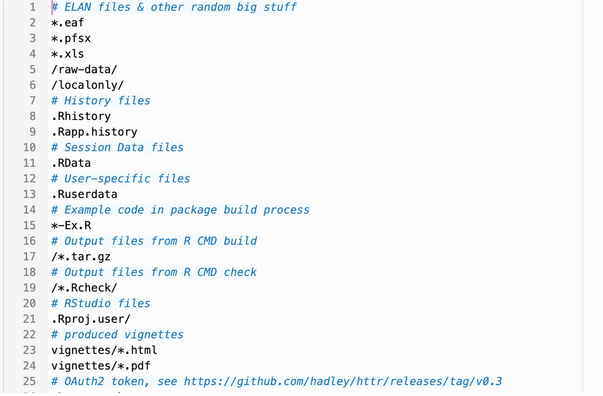

Git & GitHub
version control, github, rstudio integration
2026-01-20
Lecture planning
Git & GitHub Essentials Chapter
- Introduction – the point of version control
- Git
- Overview & workflow musts
- Git lingo 1. Repositories
- repository / repo
- initialize
- clone
- branch & checkout
- Version control
- commit
- stage
- fetch
- pull
- push
- Merging
- diff
- merge
- merge conflict
- rebase
- fast-forward (ff)
- squash
- cherry-pick
- stash
- Remote repositories
- remote
- origin
- upstream
- fork
- pull request
- (Optional) Using Git in the terminal
- Repo structure
- What does and does not go in a repo?
- Top-level essentials
- README
- .gitignore
- The rest of your stuff
- Metadata and information
- GitHub
- What is GitHub? How is it different from Git?
- GitHub features 1. Issues 2. Pull requests 3. Pages 4. Copilot 5. More
- Actions
- Projects
- Codespaces
- Interfacing with GitHub (without RStudio) 1. GitHub website 2. GitHub Desktop 3. Other options
- VS Code and other IDEs
- GitHub CLI
- Interfacing with GitHub in RStudio 1. Connecting RStudio to GitHub 2. Using GitHub in RStudio
- Cloning a repo
- Committing changes
- Pushing changes
- Pulling changes
- Creating pull requests
- Git Pains
- Common issues
- Helpful resources
- The nuclear option
Housekeeping
- Accountability plans due TODAY
- Make sure you have GitHub account created
- RStudio + Git setup: happygitwithr.com
- Practice from last week: How’s your RStudio customization going?
Why Version Control?
Final_NDrevisions-finalmarch22_FINALFINAL.docx

PhD Comics: “FINAL”.doc
Version Control Basics
- Minimally:
- What changed?
- additions, deletions, modifications
- When?
- timestamp for each change
- Who changed what
- track author contributions in collaborative work
- Revert changes
- go back to any previous version instantly
- What changed?

Git Version Control
Git is a robust version control system designed for text-based files
- All the basics:
- What?
- When?
- Who?
- Revert!
- Plus:
- Which change is this?
- unique IDs for every revision
- Why did it change?
- commit messages explain purpose
- Branch and merge
- work on multiple features simultaneously
- Backup
- project (“repository”) history lives in multiple places
- Asynchronous collaboration
- identify and resolve conflicting changes
- Integration
- with IDEs (e.g., RStudio) and cloud services (e.g., GitHub)
- Which change is this?

Git Repositories
A repository (or “repo”) is a project folder tracked by Git. Everything Git does is centered around repos.
Any folder on your computer can be turned into a Git repository (i.e. “initialized”), but a well-organized repo typically includes a few key components:
- Project files (e.g., scripts, data, documents)
- Metadata files (hidden files and directories that Git uses to manage version control)
- Bespoke files like
README.md,.gitignore, and.ymlfiles (more on these later)
Git repos can be local (on your computer) or remote (hosted on a server like GitHub).
Git ≠ GitHub
GitHub is a web-based platform for hosting public and private Git repositories. It is designed to promote code sharing and collaboration, but very useful for individuals, too.
GitHub and Git are related, but not the same thing.
Git
- Version control system
- Tracks changes in metadata files
- Your files + metadata files = project repository (aka “repo”)
- Repos stored locally on your computer
- Works offline
- Free & open source
- The standard for version control

GitHub
- Web-based hosting service
- Cloud storage for Git repositories
- All repo contents, full history, additional features
- User-friendly web interface for Git
- Collaboration tools
- Free and paid features
- One of many Git hosting services
GitHub Features
In this class we’ll use GitHub to:
- Maintain all class materials
- Create and share your own code and projects
- Practice git and GitHub skills
- Collaborate on group projects
But GitHub offers many more features, including:
- Issues to track tasks, enhancements, and bugs
- Pull requests to propose and discuss changes before integrating them into the main project
- GitHub Pages to host websites directly from a repository
- like the class site!
- GitHub Copilot to assist with code generation and suggestions
- Actions to automate workflows
- Projects to organize and prioritize work
- Codespaces to provide cloud-based development environments
Git Fundamentals
Git Vocabulary
Not all of these are essential at the start, but you should quickly get comfortable with the ones highlighted in red.
Repo-level
- Repository or repo
- a project folder tracked by Git
- init
- initialize a new Git repository
- clone
- create your own personal copy of an existing repository
- fork
- copy a repository keeping a connection to the original
- branch
- create your own temporary line of work in a repo
- checkout
- switch between branches in a repo
File-level
- commit
- save a snapshot of changes with a descriptive message
- fetch
- get latest changes from remote repo without merging
- merge
- combine changes from different branches
- pull
- get latest changes from remote repo (=fetch+merge)
- push
- send your commits to remote repo
- merge conflict
- conflicting changes that need manual resolution
More to look for on your own
diff, stash, rebase, tag, cherry-pick, revert, reset, HEAD, remote, origin, upstream
Commits: Snapshots in Time
A commit is the metadata associated with a change.
Commit Messages: Best Practices
Good commit messages:
- Describe what and why, not how
- Start with a present tense verb (“Add”, “Fix”, “Update”)
- First line under 50 characters
A shameful confession
I am a total hypocrite and rarely follow these “good” and “bad” guidelines. The longer I work, the more likely my commit messages devolve into oops i broke the kid data but the adult glms work now or omg i can't anymore here are some broken plots fix this later or don't i don't care or i need a drink.
These are actual commits from my actual repos. I’m not proud. Present-me is often pretty frustrated with past-me’s choices, but I can’t pretend that I don’t also find it entertaining and humanizing. (You’d think I wouldn’t need to humanize myself to myself, wouldn’t you? You’d be wrong.)
While I encourage you to do as I say, not as I do, what actually matters is that you 1) commit often and 2) write messages that make sense to anyone who has to read them (including, hopefully, future you).
The Basic Git(Hub) Workflow
- Pull changes
- Every time you sit down to work, before doing anything else
- Commit changes
- Very frequently!
- Any time you’ve made a “nameable” change
- Use brief, informative commit messages
- Push changes
- Don’t forget to commit first
- Every time you pause or complete a work session
Git in the Command Line / Terminal
Local git repos are managed through the command line (Terminal on Mac, Git Bash on Windows). The process of sitting down to work, pulling from an upstream repo, making a few changes, adding those edited files to the staging area, committing with a brief commit message, and then pushing to upstream at the end of your work session might look something like this:
Git in RStudio
In D2M-R, you’ll interact with Git through RStudio rather than Terminal or Command Prompt.
You’ll mostly use the Git pane, which gives you a pretty user-friendly interface for the same commands you would run in the terminal.
But you can also use the Terminal tab in RStudio to run git commands directly, exactly as you would in a standalone terminal.
You’ll need this for more advanced tasks like resolving merge conflicts, but you can always opt to use it instead of the interface if you prefer.
Git Project Components
What literally goes in your git repo?
Repository Structure
A typical Git repository includes:
- Project files
- The actual content of your project (e.g., scripts, data, documents), organized in a logical folder structure
- Metadata files
- Hidden files and directories (like
.git/) that Git uses to manage version control
- Hidden files and directories (like
- README.md
- A markdown file that provides an overview of the project, instructions for use, and other relevant information
- .gitignore
- A text file that specifies which files or directories Git should ignore
- Configuration files (as needed)
- Things like
.ymloptions, bibliography files, themes, etc.
- Things like
Repo Structure: Example 1
My preferred structure for a Quarto manuscript project:
Project file directories
/localonly: only present in your local R Project, listed in your .gitignore and never synced to github/data: .csv/tabular data files for all raw or intermediate datasets read into in your .qmd, optional/rawsubfolder for raw data read (only) into unsourced R scripts/source: .R scripts to be called in an early chunk of your .qmd, e.g., stylistic preferences, functions, minor data wrangling/images: exported figures and any image files to read-in to your R Markdown manuscript/_extensions: auto-generated or installed Quarto extensions, like apaquarto
Top-level files
README.md: project overview, repo structure, to-do list, etc..gitignore: starting from the R .gitignore templateproject-manuscript.qmd: the home of your eventual publicationbibliography.bib: a plain-text file containing all the BibTeX entries cited in your manuscriptyourCitationStyle.csl: the script used to format in-text and bibliography citations when knitting
Repo Structure: Example 2
A simple, generic project:
my-research-project/
├── README.md
├── my-project.Rproj
├── .gitignore
├── data/
│ ├── raw/ # Original data (maybe not in Git)
│ └── processed/ # Cleaned data
├── scripts/
│ ├── 01_clean.R # Numbered workflow
│ ├── 02_analyze.R
│ └── functions.R # Reusable functions
├── outputs/
│ ├── plots/
│ └── tables/
└── docs/
│ └── analysis.qmd # Main report
├── localonly/ # LISTED IN YOUR .GITIGNORE
└── protected-data/ # ONLY EXISTS ON YOUR COMPUTER, NOT GITHUBHidden files and directories
Repos and R Projects will also include some hidden files and directories
.git/- Git metadata, what makes Git work.Rproj.user/- RStudio project settings.quarto/- Quarto project settings
You won’t interact with these directories directly, and you won’t see them in RStudio or on GitHub.
You may also have other hidden files, for example:
.Rproj.RData.Rhistory.DS_Store
You won’t interact with these either but they won’t always be fully hidden in every interface. You can add them to your .gitignore file so they don’t clutter up your repo.
README.md
A README.md file provides a project overview. It is typically the first thing someone sees when they visit your repository on GitHub.
- Simple markdown (
.md) document - What you see rendered on a repo’s GitHub page
- Can do lots of things, but should at a minimum describe:
- Purpose of the repo
- Dataset(s)
- Repo structure
- Any relevant licensing, restrictions, or citations


.gitignore: what
A .gitignore file tells Git which files and directories to ignore when comparing differences between versions.
- Plain text file w/out extension
- Files & folders that should be excluded from all git processes
- Matched on strings in file/folder names, including wildcard characters and simplified regex
- View documentation

.gitignore: why
Not everything belongs online.
- PRIVACY.
- Do not upload anything with sensitive or identifiable information.
- It is your responsibility to follow your IRB.
- Security
- passwords, security keys, login tokens
- Bloat
- Git is designed for text files
- Large files push very slowly and can cause RStudio to hang
- Some files are regenerated automatically
- Conflict
- “behind the scenes” files that actually interact with local, git, or R processes will conflict for baffling reasons (sort of a technological observer effect)
.gitignore: how
Optionally start with a template then:
- Use informative
# comments - Protect private data in a
localonly/folder- Dedicated place for anything you need to keep offline that the .gitignore might not explicitly catch
- Good place to keep deanonymized datasets instead of trusting yourself to remember to add them to the .gitignore
- Ignore files/folders
- Matching the name:
data/raw/sensitive_data.csv,topsecret/ - Using wildcards:
*.pdf,no-git_*
- Matching the name:
Ignore large files
- Media files: e.g,
*.png,*.jpg,*.mp4- tend to be very large, often contain sensitive info
- Presentation files: e.g.,
*.pptx,*.key- not necessary for reproducibility, often large
- Specialized and raw files: e.g,
*.bdl,*.ear,*.mgh- data needs to be tabular eventually anyway
Ignore auto-generated files
- System files: e.g.,
*.DS_Store,*.RData,*.Rhistory- platform-specific, or not text-based
- Process files: e.g.,
*.log,*.aux,*.out- should be deleted after success but can stick around if knitting fails
- Compiled files: e.g.,
*.pdf,*.docx,*.html- recreated every time you knit
D2M-R Q1 | Week 3